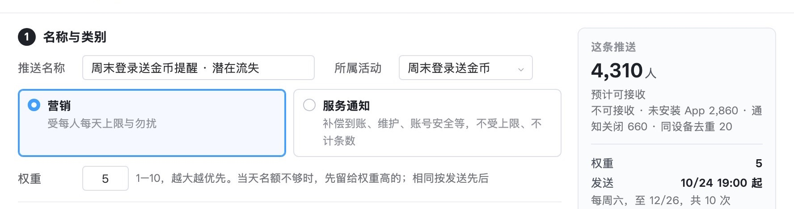
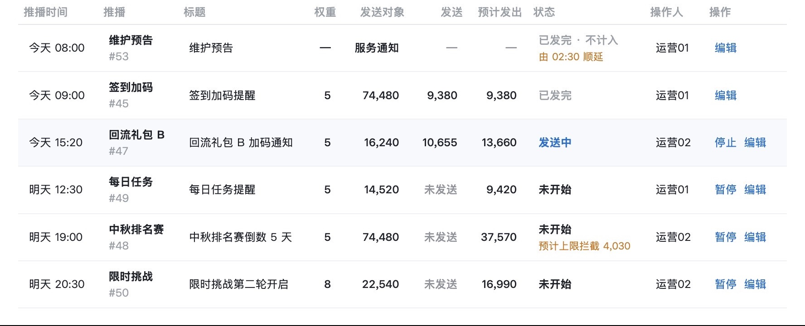
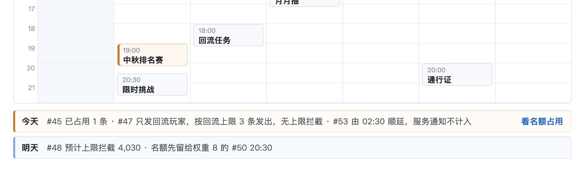
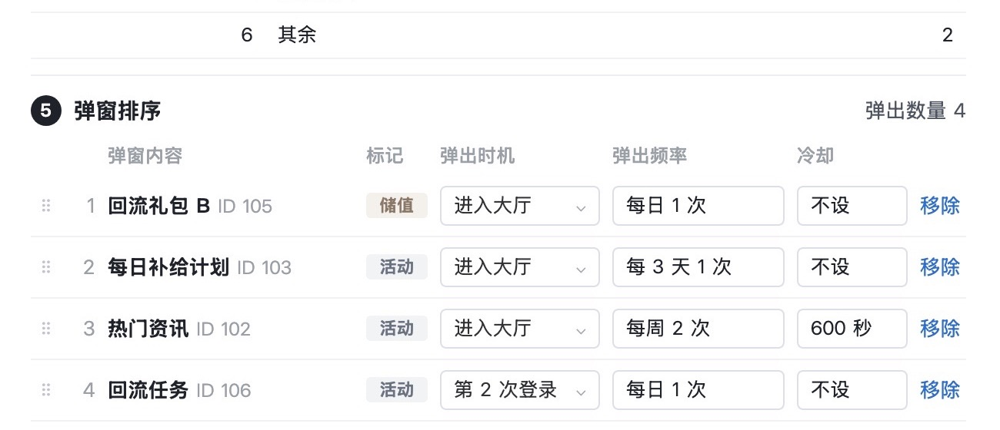

触达系统需求评审版 · 2026-10-27 · 按你定的两件改
推播加了权重，名额不够时先留给权重高的；弹窗加回了弹出时机，待你验收
权重 1–10，默认 5，越大越优先。弹出时机六选一，和弹出频率一起判断。下面几处具体做法是我定的，标了「替你定」，都可以推翻。
1–10权重
营销推送都设权重，默认 5；推播列表、新建页、名额占用都显示
6种时机
大厅自动弹窗每个弹窗内容选一种，默认「进入大厅」
1件
待研发确认：客户端能不能区分登录进入和返回大厅；已写进文档
01权重：发给每位玩家前，先为他当天后面权重更高的定时推送留名额
- 怎么算：发给某位玩家前，先数他当天还没发、权重比这条高的定时推送有几条，给它们留出名额；剩下的名额才给这一条。权重相同按发送先后，和现在一样。
- 示例：明天 #49 12:30、#48 19:00 权重 5，#50 20:30 权重 8，有 4,030 人三条都会收到。名额先留给 #50，#49 先发占另一条，#48 被拦 4,030 人。原来被拦的是最晚发的 #50。
- 替你定：
- 权重 1–10，默认 5，越大越优先。
- 条件触发推送也设权重，但事先不知道会不会触发，不为它预留名额，按触发时剩下的名额发。
- 被停止或暂停的推送不再占预留。
- 短信每人每天只有 1 条，不设权重。

第 1 页 · 新建推播：类别下多一行权重，右侧摘要也写权重

第 1 页 · 定时列表：加权重列；#50 权重 8，被拦的换成 #48，预计发出随之变动

第 1 页 · 日历：#48 标为被拦，明天一行写明名额先留给 #50
02弹出时机：每个弹窗内容选一种时机，和弹出频率一起判断
- 六种时机：
- 进入大厅（默认，登录后进入和从游戏返回都算）
- 返回大厅
- 首次登录（当天第一次登录后进入）
- 非首次登录
- 第 N 次登录
- 活动开启（所属活动开始后第一次进入）
- 怎么判断：这次进入符合时机，频率没用完、也不在冷却中，才弹。例如回流任务设「第 2 次登录、每日 1 次」：当天第 2 次登录后进大厅时弹，之后当天不再弹。
- 原数据怎么迁：现在「每天首次登录弹 1 次」这类写法，拆成时机「首次登录」加频率「每天 1 次」。
- 替你定：时机只用于大厅自动弹窗；破产、购买指定礼包、押注达到指定金额在事件发生时弹，不设时机。六种时机按运营反馈研判里列的写。

第 4 页 · 编辑弹窗规则：弹窗排序多一列弹出时机，回流任务为第 2 次登录
03改到的地方
| 页 | 权重 | 弹出时机 |
|---|
| 1 | 新建推播、条件触发设置、定时和条件触发列表、日历、名额占用；业务规则补研发改动、算法与示例 | — |
| 2、3 | 条件触发写明也设权重、不预留；短信写明不设权重 | — |
| 4 | — | 编辑弹窗规则、拖动未保存、保存确认、弹窗内容编辑与展开、命中方式对比；业务规则补研发改动、数据迁移、时机定义与示例、待研发确认 |
| 10 | — | 玩家查询的弹窗表改为「弹出时机与频率」一列 |
顺带：条件触发列表每行的状态原来写「进行中」，和业务规则「生效中」对不上，已改。
04评审时要讲一句的地方
- 两个「谁先」方向相反：推播的权重是数字越大越优先；弹窗的优先级是数字越小越先排（原来弹窗也叫「权重」，迁移时改名为优先级）。图上和规则里都写明了方向，评审时提一句，免得研发混用。
- 待研发确认：客户端能否区分「登录后进入大厅」和「从游戏返回大厅」，服务端能否取到玩家当天第几次登录。做不到的话，「返回大厅」「第 N 次登录」两种时机要先拿掉。已写进第 4 页「待研发确认」。